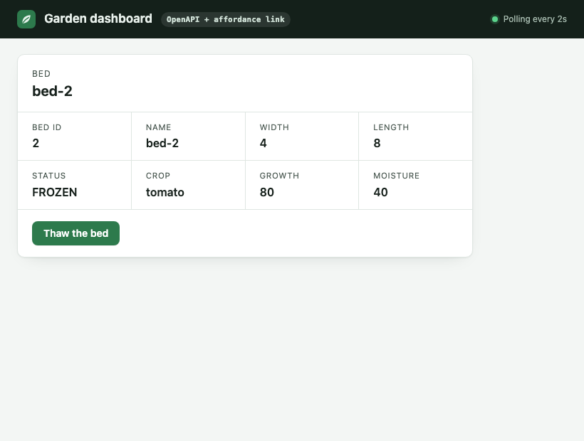

In the end we wind up with HATEOAS anyway
We kept improving an OpenAPI client until it survived every change our garden server could throw at it. Its last fix was a link in the response: the Web's own mechanism.
An OpenAPI description can tell a client what the API can ever do. Only the response can tell it what this resource allows right now. Carry that in a link, and the client is a hypermedia client.
The final form, in one paragraph
The client has no generated code. It reads the garden's OpenAPI description while it runs, for names, titles, schemas and paths. Every plain JSON answer about a bed carries one extra header: a Link to the affordance set for that bed's current state. The client follows the link, checks the set's integrity, and shows only the operations a form in that set names. Everything else on the page still comes from OpenAPI.
One cycle, request by request
Blue steps are OpenAPI doing what it's good at. Green steps are the hypermedia that closes the gap.
- OpenAPI
Read the description, revalidated by its
ETageach time. It names every operation, its title, its path template and its request schema. One extension tells the client where to find what's allowed now:"x-heart-affordances": { "header": "Link", "rel": "https://w3id.org/heart-rise/rels/forms", "match": "method and path template" } - OpenAPI
Read the bed with the one operation the client was told about,
getBed. The body is the plain state, exactly as a typical JSON API returns it.GET /beds/2 Accept: application/json 200 OK Link: </affordance-sets/…>; rel="https://w3id.org/heart-rise/rels/forms"; type="application/hal+json"; integrity="sha256-…" {"id":2,"label":"bed-2","status":"FROZEN","cropName":"tomato","moistureLevel":40, …} - Hypermedia
Follow the link to the affordance set. It's content-addressed and immutable, so the client fetches each one once and checks its bytes against the link's
integrity. Every bed in the same state shares it. A frozen bed's set holds one form:GET /affordance-sets/… Accept: application/hal+json {"_forms": { "garden:thaw": { "title": "Thaw the bed", "method": "POST", "_links": { "target": { "href": "/beds/{id}/actions/thaw", "templated": true } }, … } }} - Hypermedia
Keep only what the set names. An operation stays if a form has the same method and the same path template, ignoring variable names. No operation names, no prose, no rules about statuses in the client:
const shape = (t) => t.replace(/\{[^}]+\}/g, "{}"); const allowedNow = operations.filter((op) => forms.some((f) => f.method === op.method && shape(f.target) === shape(op.path))); - OpenAPI
Draw the buttons from what's left. Each title is the operation's
summary, and each field comes from the operation's request schema, with its defaults, examples and limits. A frozen bed gets one button: Thaw the bed. - Both
Act, and start again. The client posts JSON to the operation's path. The answer is the bed's new state with a new
Link, to the set for its new state, so the next screen is already right. After thawing, the bed's set offers Water, and only Water.
Who does what
- operation names and titles
- request schemas, defaults, examples, limits
- path templates
- documentation for people
- which operations this resource allows now
- as an immutable, cacheable, integrity-checked set
- the same set HEART's own clients follow
- nothing the client must hard-code
What it scored
The same tests every client faced, scored by the garden's own records. Highlighted: the final form.
| Test | Generated client | Spec-reading | Spec-reading + link | HEART dashboard |
|---|---|---|---|---|
| Frost suite, Monday | 3 of 3 | 0 of 3 | 3 of 3 | 3 of 3 |
| Frost suite, Tuesday | 3 of 7 | 1 of 7 | 7 of 7 | 7 of 7 |
| Six breaking changes | 4 of 6 | 6 of 6 | 6 of 6 | 6 of 6 |
| Three careful changes | 3 of 3 | 3 of 3 | 3 of 3 | 3 of 3 |


Why it had to be a link
A description describes the API. It can't know that bed 2 froze overnight. "Only allowed when status is PLANTED" is the best OpenAPI can do, and it's a sentence. A client can parse that prose, copy the rule into code, or try the act and take the 409. All three bind the client to rules the server may change.
The only thing that knows what bed 2 allows now is the answer about bed 2. So the answer has to carry it, or point to it. That is Fielding's sixth rule: from the first URL on, every step is a choice among options the server sent with the state.
OpenAPI's maintainers say "HTTP APIs" on purpose, and they're honest about the scope. It leaves this gap open by design. Closing it doesn't mean throwing OpenAPI away. It means adding the one piece of hypermedia that carries the truth about this moment. Here that piece is HEART's affordance set, which is HEART's L1 rung, reached from the other side.
How we got here
What's still bound in
- The client still knows three things in advance: the garden's address, where the description lives, and
getBed. - It matches forms to operations by path template. A form whose target the description doesn't list would be dropped. Following the form's own target would fix that, and would be one more step toward a plain HEART client.
- The link is opt-in on the server, because it changes the description's bytes. The garden marks it in its version,
1.0.0+affordance-links, so the published 1.0.0 stays as it was.